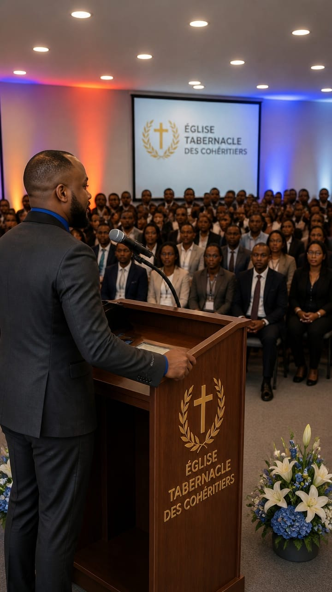

Mission Église Tabernacle des Cohéritiers
Une communauté chrétienne à Jacmel, Haïti, consacrée à la foi, à la prière, à l'enseignement biblique et au service.
Voir les horaires Nous contacterÀ propos de la mission
La Mission Église Tabernacle des Cohéritiers (ETAC) œuvre pour annoncer l'Évangile, fortifier la foi et accompagner les familles dans une vie chrétienne fondée sur la Parole de Dieu.
Fondateur : Pasteur Dauphin Jovin
Localisation : Jacmel, Haïti
Nos horaires
Dimanche
8h00 – 10h30
Culte dominical
Mardi
17h00
Étude biblique
Vendredi
Réunion de prière
Tous les vendredis
Galerie

Contact
Facebook :